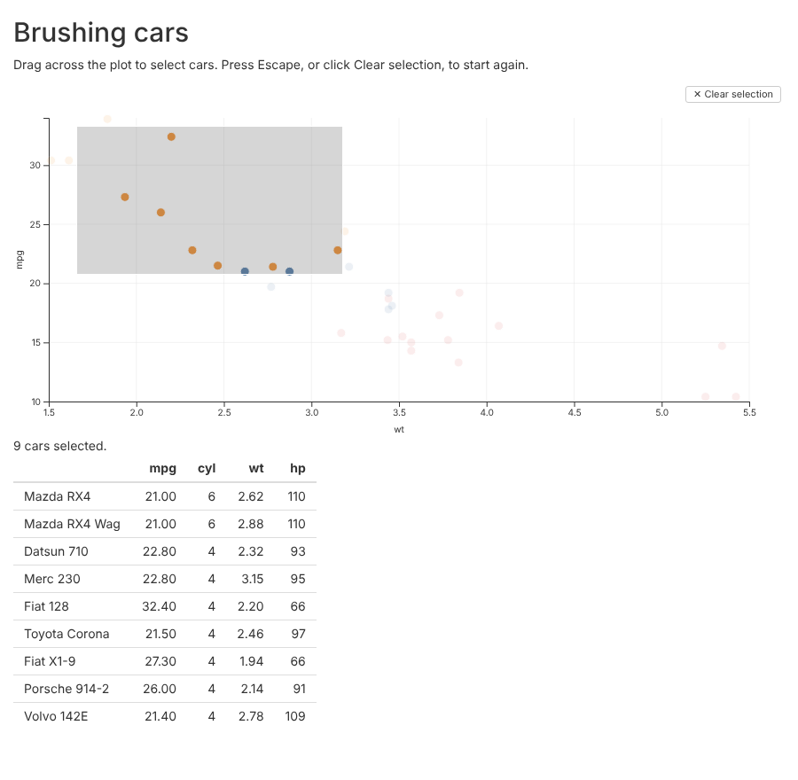

glyph plots work in Shiny apps. glyphOutput() puts a
plot in the page and renderGlyph() draws it from the
server. When the user brushes points, clicks a mark or clicks a legend
entry, the server gets the row numbers of what they selected.
This article is built around a small app that comes with glyph. You
brush points in a scatterplot of mtcars, and a table lists
the cars you selected. Run it with:
shiny::runApp(system.file("examples", "shiny-brush", package = "glyph"))
shiny is not installed with glyph. Install it with
install.packages("shiny") before you try this.
The app
This is the whole app:
# Brush points in the scatterplot to list the cars in a table.
#
# Run it with:
# shiny::runApp(system.file("examples", "shiny-brush", package = "glyph"))
library(shiny)
library(glyph)
cars <- mtcars[, c("mpg", "cyl", "wt", "hp")]
cars$cyl <- as.integer(cars$cyl)
cars$hp <- as.integer(cars$hp)
ui <- fluidPage(
titlePanel("Brushing cars"),
p("Drag across the plot to select cars. Press Escape, or click",
"Clear selection, to start again."),
glyphOutput("plot", height = "400px"),
textOutput("count"),
tableOutput("rows")
)
server <- function(input, output, session) {
output$plot <- renderGlyph(
glyph(cars, x = wt, y = mpg) |>
mark_point(color = factor(cyl)) |>
interact(brush = TRUE, tooltip = TRUE)
)
# Row numbers of `cars`, or NULL when nothing is selected.
selected <- reactive(input$plot_selected)
output$count <- renderText({
n <- length(selected())
if (is.null(selected())) "No cars selected."
else if (n == 1) "1 car selected."
else paste(n, "cars selected.")
})
output$rows <- renderTable({
req(selected())
cars[selected(), ]
}, rownames = TRUE)
}
shinyApp(ui, server)The rest of this section goes through it.
Placing the plot
glyphOutput("plot", height = "400px") reserves space for
the plot in the page. The width is 100% by default. The plot is drawn to
fit the space it is given.
Drawing the plot
renderGlyph() takes the same pipeline you would print at
the console:
output$plot <- renderGlyph(
glyph(cars, x = wt, y = mpg) |>
mark_point(color = factor(cyl)) |>
interact(brush = TRUE, tooltip = TRUE)
)It also takes a layout from compose(), or a widget from
render(). If the expression returns NULL, the
output is left empty.
The plot needs something the user can select with. Here that is
interact(brush = TRUE). Without it,
input$plot_selected never changes.
Reading the selection
The selection arrives as input$plot_selected: the
output’s name followed by _selected. It holds the row
numbers of the data frame given to glyph(), so
cars[input$plot_selected, ] gives the selected rows. When
nothing is selected it is NULL. The table uses
req() to show nothing until there is a selection.
In a Shiny module, use glyphOutput(ns("plot")) in the
module’s UI, and the selection arrives in the module server as
input$plot_selected.
When the server hears about it
The value changes when the user does one of these:
- Ends a brush. The value is sent when the mouse button is released,
not while the brush is dragged. A brush that takes in no points sends
integer(0). - Clicks a mark in a plot with
interact(click = "select"). The mark’s rows are selected. Clicking it again clears the selection. - Clicks an entry in a legend added with
selection(type = "legend"). Clicking an entry hides its rows, and the rows still shown are the selection. With every entry shown again, the value isNULL. - Clears a brush, with the “Clear selection” button, the Escape key,
or a click on an empty part of the plot. The value becomes
NULL.
Each new selection replaces the last one.
A redraw also clears the selection, and sends NULL. The
plot is redrawn when renderGlyph() runs again, for example
because a reactive value it uses has changed. It is also redrawn when
its output changes size, for example when the browser window is
resized.
So keep input$plot_selected out of the plot’s own
renderGlyph(). A plot that depends on its own selection is
redrawn each time the user selects something, and the selection is lost
straight away. Use the selection in other outputs, as the example does
with its table.
What the row numbers count
The numbers are positions in the data frame, like those from
which(). They are not row names.
They count every row of the data frame, including rows that aren’t
drawn. A mark leaves out rows with a missing x or y value, and warns
that it did. Those rows are never selected, but the rows after them keep
their numbers. A computed mapping such as x = log(wt)
doesn’t change the numbers either.
df <- data.frame(x = c(1, NA, 3, 4), y = c(2, 5, 1, 3))
glyph(df, x = x, y = y) |> mark_point() |> interact(brush = TRUE)
# Brushing every point gives c(1L, 3L, 4L).Selecting a box, violin, histogram bin or polygon selects every row it summarises. A sina mark draws a point for each row, so each point is one row.
A mark that has its own data, such as
mark_line(data = trend, x = x, y = fit), draws rows of
another data frame. It adds nothing to the value.
Facets and layouts
A facet() grid splits one data frame into panels, so its
value is one vector. Each panel has its own brush, and the value holds
the rows selected in any of them.
A compose() layout can show different data in each
panel. Its value is a list with one entry per panel, in the order the
panels were given. If compose() was called with names, the
entries have those names:
output$plots <- renderGlyph(
compose(
cars = glyph(mtcars, x = wt, y = mpg) |>
mark_point() |>
interact(brush = TRUE),
flowers = glyph(iris, x = Sepal.Length, y = Petal.Length) |>
mark_point() |>
interact(brush = TRUE)
)
)Here input$plots_selected is NULL until
something is selected. After the user brushes a few cars it is, for
example, list(cars = c(3L, 18L, 20L), flowers = NULL). Each
entry holds row numbers of that panel’s data, so
mtcars[input$plots_selected$cars, ] gives the cars. A panel
with no selection is NULL. When every panel is back to
NULL, so is the whole value. A layout nested inside another
gives a nested list of the same shape.
With linked_selections = TRUE, a selection in one panel
highlights the matching rows in the others. Only the selection itself is
reported. A panel that only highlights another panel’s selection reports
NULL.
Limits
Some things are not done yet:
- Selections only go from the browser to the server. The server can’t set or clear a selection.
- Only selections are sent. Zooming, hovering and tooltips stay in the browser.
- A redraw clears the selection, as described above, including a redraw caused by resizing.
- In a plot without a brush there is no “Clear selection” button, and Escape does nothing. To clear a click selection, click the selected mark again.
- A legend matches a row to its entry by looking through the row’s values for one that is also a colour level. If another column holds a value that is also a colour level, the row can be matched to the wrong entry.